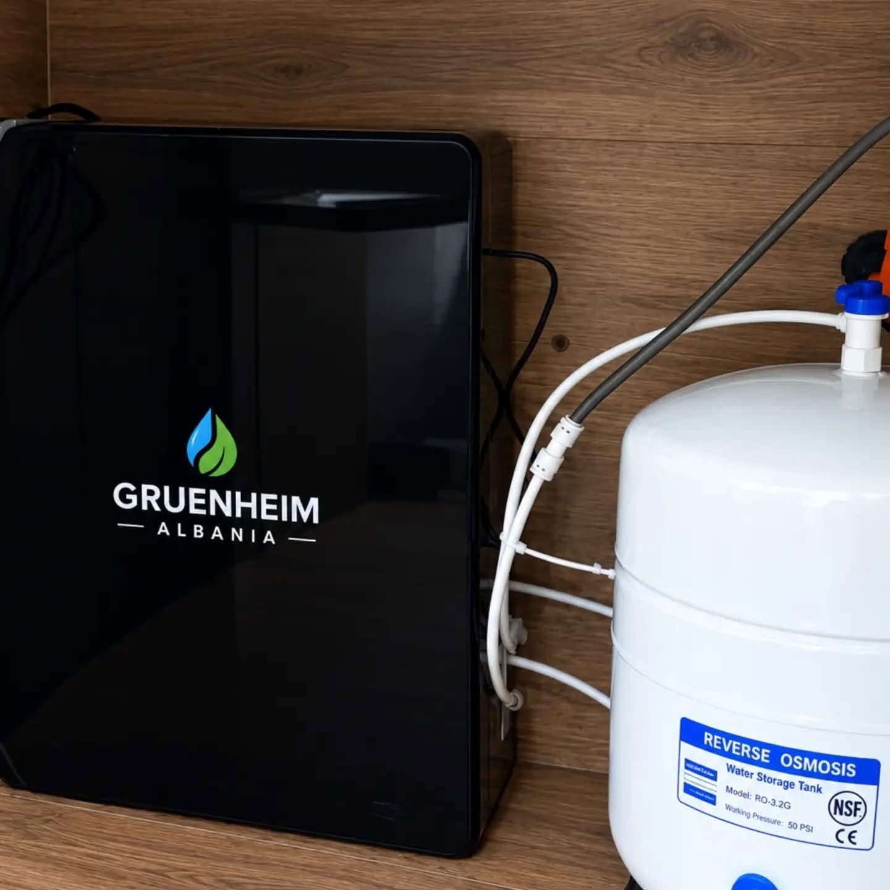

01Për ujin e pijshëm
Osmozë
e kundërt.
Sistem praktik që vendoset nën banak dhe siguron ujë të filtruar në kuzhinë. Konfigurimi dhe fazat përcaktohen sipas sistemit të zgjedhur dhe ujit që përdor.
- ✓Vendosje kompakte nën lavaman
- ✓Rubinet i dedikuar për ujin e filtruar
- ✓Depozitë për furnizim të përshtatshëm